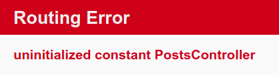
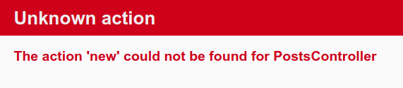
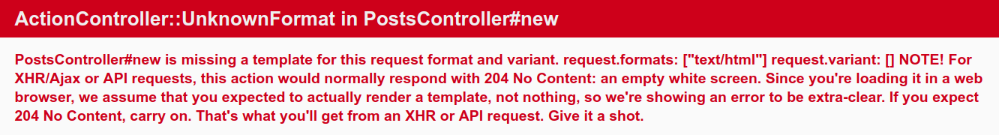
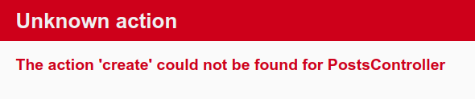
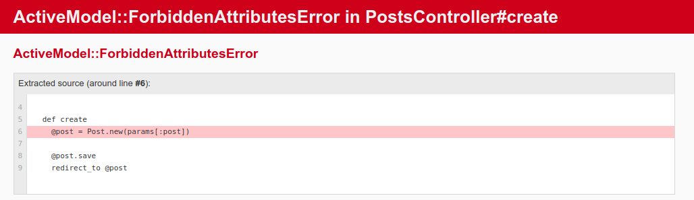
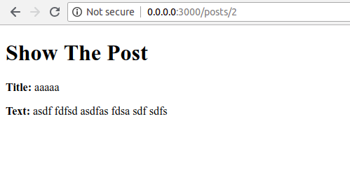
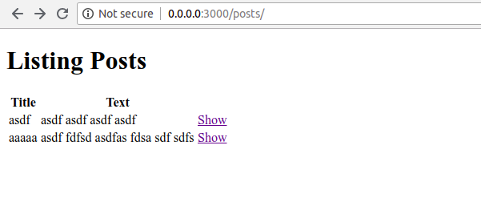
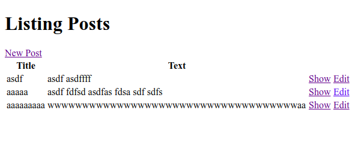

CRUD Operations
Rails Resources
In your application, you will create a new resource for doing the operational of CRUD (Create, Read, Update, and Delete). A resource is the term used for a collection of similiar objects such as articles, people or animals.
Rails provides a resources method which can be used to declare a standard REST resource. Now you need to add the posts resource to the config/routes.rb as below:
Rails.application.routes.draw do
get 'welcome/index'
resources :posts
root 'welcome#index'
# For details on the DSL available within this file, see http://guides.rubyonrails.org/routing.html
end
If you run bin/rails routes, you'll see that it has defined routes for all the standard RESTful actions.
$ bin/rails routes
Prefix Verb URI Pattern Controller#Action
welcome_index GET /welcome/index(.:format) welcome#index
posts GET /posts(.:format) posts#index
POST /posts(.:format) posts#create
new_post GET /posts/new(.:format) posts#new
edit_post GET /posts/:id/edit(.:format) posts#edit
post GET /posts/:id(.:format) posts#show
PATCH /posts/:id(.:format) posts#update
PUT /posts/:id(.:format) posts#update
DELETE /posts/:id(.:format) posts#destroy
root GET / welcome#index
rails_service_blob GET /rails/active_storage/blobs/:signed_id/*filename(.:format) active_storage/blobs#show
rails_blob_representation GET /rails/active_storage/representations/:signed_blob_id/:variation_key/*filename(.:format) active_storage/representations#show
rails_disk_service GET /rails/active_storage/disk/:encoded_key/*filename(.:format) active_storage/disk#show
update_rails_disk_service PUT /rails/active_storage/disk/:encoded_token(.:format) active_storage/disk#update
rails_direct_uploads POST /rails/active_storage/direct_uploads(.:format) active_storage/direct_uploads#create
Next you will add the ability to create new posts in your application and be able to view them.
New Post
As you can see in the rails bin/rails routes log, you can access http://0.0.0.0:3000/posts/new directly on browser. Go ahead and check that. Then you will get the error like this.

The error occurs because the route need to have a controller defined in order to serve the request. Let's generate new controller called PostsController to solve the error.
Create the PostController
To generate the controller, simply do a command as below.
$ bin/rails genereate controller Posts
Now open the Posts controller at app/controllers/posts_controller.rb, you'll see a empty controller.
class PostsController < ApplicationController
end
The controller is created. Go refresh the http://0.0.0.0:3000/posts/new URL and you will get the error again.

This error indicates that Rails cannot find the "new" action. What is "new" action mean?. In Rails you just generate a controller that named PostsController. And Ruby is Object Oriented Programming Which mean you'll code with OOP concept like class, method, and many "Object Oriented" concept. And the error that you saw before mean Rails cannot find the 'new' action or you can say 'method' in the PostsController class.
Define new method
For the first try, let's create a new method called 'new' inside the posts_controller.rb class.
class PostsController < ApplicationController
def new
end
end
Refresh the page and you'll get the error again.

You're get alot of error. Let's go through and understand what each part of it means.
The first part identifies which templates is missing. In this case, it's the posts/new templates. Rails will first look for this template. If not found, then it will attempt to load a template called application/new because the PostsController is inherites from ApplicationController.
The next part of the message contains request.formats which specifies the format of template to be served in response. It is set to text/html as we requested this page via browser, so Rails is looking for an HTML template.
Create new form
Let's create a file new.html.erb views for PostsController at app/views/posts, And write this content in it.
<h1>New Posts</h1>
<%= form_with scope: :article, local: true do |form| %>
<p>
<%= form.label :title %><br>
<%= form.text_field :title %>
</p>
<p>
<%= form.label :text %><br>
<%= form.text_area :text %>
</p>
<p>
<%= form.submit %>
</p>
<% end %>
As you can see, you will use a form builder. The primary form builder for Rails is provided by a helper method form_with. If you refresh the page now, you'll see the form is displaying sucessfuly. There's the one problem with this form though. If you inspect the HTML that is generated, by viewing the source of the page, you will see that the action attribute for the form is pointing at /posts/new. This is a problem because this routes goes to the very page that you're on right at the moment, and that route should only be used to display the form for a new post.
The form needs to use different URL in order to go somewhere else. This can be done with :url option of form_with. Edit the form_with line inside app/views/posts/new.html.erb.
<%= form_with scope: :article, url: posts_path, local: true do |form| %>
In this example, the posts_path helper is passed to the :url option. In this case, helper tells the Rails to point the form to the URI Pattern associated with the posts prefix. And the form will (by default) send a POST request to that routes. You can check the URL Pattern by running this command.
$ bin/rails routes
It will generated a list of the URI that same as above.
After that go fill up the form and submit that. You'll get this error.

The error is very meaningful as before. That mean Rails can't find create method at your posts_controller.rb.
Define create method
Same as before. Let's create a new method called create inside the PostsController class.
class PostsController < ApplicationController
def create
render plain: params[:post].inspect
end
end
The render method here is taking a very simple hash with a key of :plain and value of params[:posts].inspect. The params method is the object which represents the parameters (or fields) coming in from the form. The params method returns an ActionController::Parameters object, which allows you to access the keys of the hash using either strings or symbols. In this situation, the only parameters that matter are the ones from the form.
If you submit the form, you'll see something like this
<ActionController::Parameters {"title"=>"asdf", "text"=>"asdfasd asdf asdf asdfafsdf"} permitted: false>
This action is now displaying the parameters for the article that are coming in from the form. But this is not really all that helpful.
Model for post
When you create a create action, this mean you create the data and store it to database. But this will never get done if you never created the Database, right?. So how to create the DB?. The good news is, Rails come with sqlite3 as the default DB. Simply run this command at your terminal and Rails will do the rest for us.
$ bin/rails generate model Post title:string text:text
What that command mean is we told Rails Post model, together with title attribute of type string, and a text attribute of type text.
So far we talk about model, view, and controller. And that's make sense, it because Ruby On Rails is working with architectural pattern commonly known as MVC Which is model is represents the data structure. It is the application's dynamic data structure, independent of the user interface. It directly manages the data, logic and rules of the application.
Rails responded by creating a bunch of files. For now, we are only take a look in app/models/post.rb and db/migrate/20180806092757_create_posts.rb
Run the migration
Before run the migration, let's take a look at db/migrate/20180806092757_create_posts.rb
class CreatePosts < ActiveRecord::Migration[5.2]
def change
create_table :posts do |t|
t.string :title
t.text :text
t.timestamps
end
end
end
The above migration creates as a method named change which will be called when you run this migration. It will create table named posts with one string title column and a text column after you run the migration.
Now run the migration command just like this.
$ bin/rails db:migrate
Rails will execute this migration command and tell you it created the Posts table.
== 20180806092757 CreatePosts: migrating ======================================
-- create_table(:posts)
-> 0.0031s
== 20180806092757 CreatePosts: migrated (0.0032s) =============================
Saving data in the controller
Now the model is migrated. Let's edit the posts_controller.rb. We need to edit create method as below.
class PostsController < ApplicationController
def create
@post = Post.new(params[:post])
@post.save
redirect_to @post
end
end
Here's what's going on: In the first line we add the data in Post table with .new() function using the parameter from request that carry on with params[:post]. @post it's a instance variable and is available to all methods within the class. Then @post.save is responsible for saving the model in the database and after that we redirect the user to show action.
Now let's try to add the new post by access http://0.0.0.0:3000/posts/new and fill up the form. Go submit the form and you will get error like this.

Secure the paramters
Rails has several security features that help you write secure applications, and you're running into one of them now. This one is called strong parameters, which requires us to tell Rails exactly which parameters are allowed into our controller actions. If don't secure the paramters that come from submit request, It very dangerous because it might be contain extra filed with values that violated your application's integrity. They would be 'mass assigned' into your model and then into the database along with the good stuff - potentially breaking your application.
We have to whitelist our controller parameters to prevent wrongful mass assigment. In this case, we want to both allow and require the title and text parameters for vaild of create.
class PostsController < ApplicationController
def create
@post = Post.new(post_params)
@post.save
redirect_to @post
end
private
def post_params
params.require(:post).permit(:title,:text)
end
end
This is often factored out into its own method so it can be reused by multiple actions in the same controller, for example create and update. The method is often made private to make sure it can't be called outside its intended context.
Show Post
If you try to submit the form, Rails will complain about not finding show action. And if you take a look the URL, it looks like http://0.0.0.0:3000/posts/1 which mean after you submit the form it will navigate to /posts/:id/ URI.
Define show method
Same as new post (but without model and migration), you need to create correspondent method and view to display the information. Let's create the show method first.
def show
@post = Post.find(params[:id])
end
Things to note. We use Post.find to find the article we're interested in, passing in params[:id] to get the :id parameter from the request. Then we'll use instance variable (prefixed with @) to hold a reference to post object and pass the instance to the view.
Create show file
Now, create file named show.html.erb in app/views/posts/ with the following content
<h1>Show The Post</h1>
<p>
<strong>Title:</strong>
<%= @post.title %>
</p>
<p>
<strong>Text:</strong>
<%= @post.text %>
</p>
And after you submit the form, You'll see the post has been sucessfuly to display.

List All Post
So far we just created new and show. But how does we see all these data in one page?. We need to list all our posts, so let's do that by creating index method in posts_controller.rb.
class PostsController < ApplicationController
def index
@post = Post.all
end
#above 'new' method
end
And create new file named index at app/views/posts/index.html.erb.
<h1>Listing Posts</h1>
<table>
<tr>
<th>Title</th>
<th>Text</th>
<th></th>
</tr>
<% @post.each do |posts| %>
<tr>
<td><%= posts.title %></td>
<td><%= posts.text %></td>
<td><%= link_to 'Show', post_path(posts) %></td>
</tr>
<% end %>
</table>
Then navigate browser to http://0.0.0.0:3000/posts You'll see all the post are listed in table with the link to show the post.

Add link
But we missed a simple thing. We need to add a link to /posts view in the root of page. So when user navigate to http://0.0.0.0:3000, It will contain a link to /posts.
Open app/views/welcome/index.html.erb and add the link.
<h1>Hello, world!!</h1>
<%= link_to 'My Post', controller: 'posts' %>
The link_to method is one of Rails built-in view helpers. It create hyperlink based on text to display and where to go.
Next add another link called "New Post" in app/viewws/posts/index.html.erb placing it above the <table> tag.
<%= link_to 'New Post', new_post_path %>
Now give a link to back to /posts URL in app/views/posts/new.html.erb in the bottom of the code.
<h1>new Post</h1>
<%= form_with scope: :post, url: posts_path, local: true do |f|%>
<p>
<%= f.label :title %><br>
<%= f.text_field :title %>
</p>
<p>
<%= f.label :text %><br>
<%= f.text_area :text %>
</p>
<p>
<%= f.submit %>
</p>
<% end %>
<%= link_to 'Back', posts_path %>
And finally add another link to go back to posts index in app/views/posts/show.html.erb.
<h1>Show The Post</h1>
<p>
<strong>Title:</strong>
<%= @post.title %>
</p>
<p>
<strong>Text:</strong>
<%= @post.text %>
</p>
<%= link_to 'Back', posts_path %>
Update a Post
Great. We've covered "CR" in the CRUD. Now let's focus on "U" part.
Define edit method
The first step is of course to add new method called edit in PostsController. We named it edit as the action that covered the URI pattern. Let's show the routes list again for reminder.
$ bin/rails routes
Prefix Verb URI Pattern Controller#Action
welcome_index GET /welcome/index(.:format) welcome#index
posts GET /posts(.:format) posts#index
POST /posts(.:format) posts#create
new_post GET /posts/new(.:format) posts#new
edit_post GET /posts/:id/edit(.:format) posts#edit
post GET /posts/:id(.:format) posts#show
PATCH /posts/:id(.:format) posts#update
PUT /posts/:id(.:format) posts#update
DELETE /posts/:id(.:format) posts#destroy
root GET / welcome#index
rails_service_blob GET /rails/active_storage/blobs/:signed_id/*filename(.:format) active_storage/blobs#show
rails_blob_representation GET /rails/active_storage/representations/:signed_blob_id/:variation_key/*filename(.:format) active_storage/representations#show
rails_disk_service GET /rails/active_storage/disk/:encoded_key/*filename(.:format) active_storage/disk#show
update_rails_disk_service PUT /rails/active_storage/disk/:encoded_token(.:format) active_storage/disk#update
rails_direct_uploads POST /rails/active_storage/direct_uploads(.:format) active_storage/direct_uploads#create
You can see at Controller#Action column it must be edit. Let's create the action now.
class PostsController < ApplicationController
def edit
@posts = Post.find(params[:id])
end
end
Create edit file
And create new file named edit.html.erb in app/views/posts/ and make it look as follows:
<h1>Edit Post</h1>
<%= form_with(model: @post, local: true) do |form| %>
<p>
<%= form.label :title %><br>
<%= form.text_field :title %>
</p>
<p>
<%= form.label :text %><br>
<%= form.text_area :text %>
</p>
<p>
<%= form.submit %>
</p>
<% end %>
<%= link_to 'Back', articles_path %>
The view contain a form similiar to the one we used to create new post. This time we point the form to the update action, which is not defined yet but will be very soon.
Passing the article object to the method, will automagically create url for submitting the edited post form. This option tells Rails that we want this form to be submitted via the PATCH HTTP method which is the HTTP method you're expected to use to update resources according to the REST protocol.
The arguments to form_with could be model objects, say, model: @article which would cause the helper to fill in the form with the fields of the object. Passing in a symbol scope (scope: :article) just creates the fields but without anything filled into them.
And don't forget to add the update link in show and index page.
<h1>Show The Post</h1>
<p>
<strong>Title:</strong>
<%= @post.title %>
</p>
<p>
<strong>Text:</strong>
<%= @post.text %>
</p>
<%= link_to 'Edit', edit_post_path(@post) %> |
<%= link_to 'Back', posts_path %>
for index you can add link after show link insert <td> tag.
<td><%= link_to 'Edit', edit_post_path(posts) %></td>
Define update method
After that you must create update method.
def update
@post = Post.find(params[:id])
if @post.update(post_params)
redirect_to @post
else
render 'edit'
end
end
The new method update, is used when you want to update a record that already exists and it accepts a hash containing the attributes that you want to update. As before, if there was an error updating the article we want to show the form back to user. If you noticed that, we reuse post_params method that we defined earlier for create action.
After that you'll look your app like this. 
Delete Post
So far we just created "C", "R", and "U". The last is the "D" AKA Delete. Why we need to delete the post that already created?. Because CRUD is a basic practical method for web development. And the data sometime is growing much bigger than before so we need to delete some data that no longer used.
Define delete and add action
Following the REST convention, the route for deleting posts as per output of bin/rails routes is
DELETE /posts/:id(.:format) posts#destroy
the delete routing method should be used for routes that destroy the resources. We use the delete method for destroying resources, and this route is mapped to the destroy action inside app/controllers/posts_controller.rb. Let's create it now at the top of private method.
def destroy
@post = Post.find(params[:id])
@post.destroy
redirect_to @post
end
Now call destroy on Active Record objects when you want to delete them from the database. We dont need to add a view for this action since we're redirecting to the index action.
Add 'Destroy' link to your index template. Add it wrapped wtith <td> tag and below the edit link.
<h1>Listing Posts</h1>
<%= link_to 'New Post', new_post_path %>
<table>
<tr>
<th>Title</th>
<th>Text</th>
<th></th>
</tr>
<% @post.each do |posts| %>
<tr>
<td><%= posts.title %></td>
<td><%= posts.text %></td>
<td><%= link_to 'Show', post_path(posts) %></td>
<td><%= link_to 'Edit', edit_post_path(posts) %></td>
<td><%= link_to 'Destroy', post_path(posts),
method: :delete,
data: { confirm: 'Are you sure?' } %></td>
</tr>
<% end %>
</table>
The delete link is little bit different. The method: :delete and data: { confirm: 'Are you sure?' } options are used as HTML5 attributes so, when the link is clicked, Rails will first show the confirm message to the user, and then submit the link with method delete.
Good work. You finised the CRUD operation in this section.